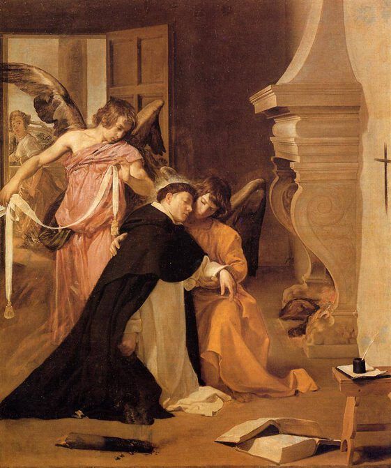

Diego Velazquez,1599 - 1660,Baroque,Spanish,"Diego Rodríguez de Silva y Velázquez (Spanish: [ˈdjeɣo βeˈlaθkeθ]; baptized June 6, 1599 – August 6, 1660) was a Spanish painter, the leading artist in the court of King Philip IV, and one of the most important painters of the Spanish Golden Age. He was an individualistic artist of the contemporary Baroque period. In addition to numerous renditions of scenes of historical and cultural significance, he painted scores of portraits of the Spanish royal family, other notable European figures, and commoners, culminating in the production of his masterpiece Las Meninas (1656).",http://en.wikipedia.org/wiki/Diego_Velázquez,128
